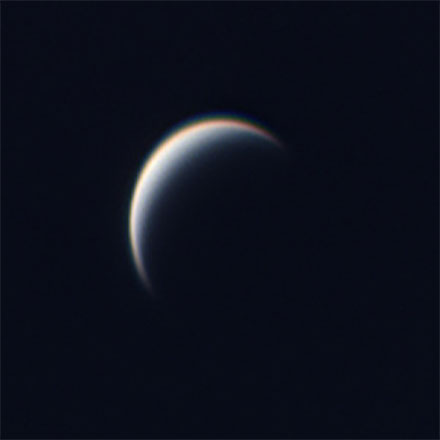

Moons

Venus' Fake Moon 1
In 1967, Venera 4 found the Venusian magnetic field to be much weaker than that of Earth.
- Perigee
- 362600 km
- Orbital period
- 27.321582 d
- Mass
- 7.3477×1022 kg

Venus' Fake Moon 2
Venus is likely to have had at least one moon created by a huge impact event billions of years ago.
- Perigee
- 362600 km
- Orbital period
- 27.321582 d
- Mass
- 7.3477×1022 kg